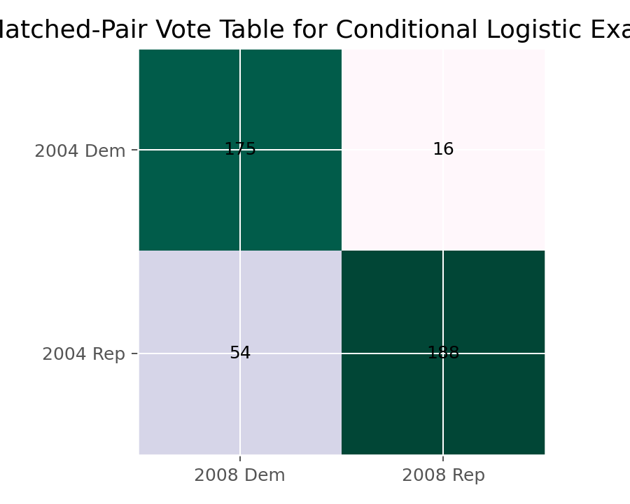

条件Logistic回归
条件Logistic回归（Conditional Logistic Regression）
方法概览
1.1 一句话本质
匹配设计里每个匹配组天生就不一样，硬估各组的截距既费参数又估不准；条件 Logistic 回归在匹配组内部条件化，把组特异截距 $\alpha_i$ 从似然里彻底约掉——只用「同组内谁暴露、谁发病」的对比来估暴露效应。
1.2 定义
条件 Logistic 回归用于分析匹配设计（1:1 或 1:M 匹配病例-对照、配对前后设计）中的二元结局。它以匹配组为条件构造条件似然，消去每组的固定截距，仅由不一致对（discordant pairs/sets）贡献信息，产出组内暴露的 odds ratio。
1.3 它主要解决什么问题
- 研究问题：在按年龄、性别等混杂因素匹配后，暴露与二元结局的关联有多强？
- 适用任务：1:1 或 1:M 匹配病例-对照、配对二元设计、成组二元数据的固定效应建模。
- 常见医学场景：年龄性别匹配的病例-对照研究（吸烟与心梗、某药物暴露与畸形）；同一患者治疗前后配对的二元反应。
1.4 直觉与类比
想象你要比较「暴露是否致病」，但担心年龄、性别等混杂。于是给每个病例配一个同龄同性别的对照，组成一对。既然一对内部年龄性别已经一样，组间的差异就无关紧要——只需看每对内部「谁暴露了、谁发病了」。如果一对里两人暴露状态相同（都吸烟或都不吸烟），这对告诉你不了任何「暴露 vs 结局」的信息（concordant，被自动忽略）；只有暴露状态不同的对（discordant）才有发言权。条件 Logistic 就是把「组内截距」这个碍事的东西条件化掉，专心数 discordant 对的方向。
核心思想与原理
2.1 它到底在解决什么根本困难
匹配设计里每个匹配组有自己的基线风险（组特异截距 $\alpha_i$）。若用普通 Logistic回归（Logistic Regression） 硬把每组截距当参数估：$N$ 个匹配组就有 $N$ 个截距参数，随样本增长而增长——这类冗余参数（nuisance parameters） 会让最大似然估计不一致（Neyman-Scott 问题），暴露效应 OR 被系统性高估（1:1 匹配时偏差可达 2 倍）。根本困难是：如何在不估这一大堆组截距的前提下，干净地估出暴露效应？
2.2 关键洞察
条件化：在每个匹配组内，固定「这组一共有几个病例」，去问「在这个条件下，偏偏是这些人成为病例的概率」。这个条件概率里，组特异截距 $\alpha_i$ 分子分母同时出现、被约掉了——正如 Cox比例风险模型（Cox Proportional Hazards Model） 的偏似然约掉基线风险 $h_0(t)$（两者数学同构，R 里 clogit 正是调 Cox 例程实现的）。约掉 $\alpha_i$ 后，似然只剩暴露效应 $\beta$，且只有组内暴露不一致的匹配组才对似然有贡献——一致组的条件概率恒为常数，不含 $\beta$。
2.3 与朴素/相邻做法的对比
- 相对普通 Logistic（把组截距当固定参数）：条件化避免 Neyman-Scott 不一致，OR 无偏。
- 相对普通 Logistic（忽略匹配、直接合并）：破坏匹配、残留混杂，OR 有偏。
- 相对 McNemar检验（McNemar Test）：McNemar 是「1:1 匹配、单个二元暴露、无协变量」时条件 Logistic 的特例——其检验等价，条件 Logistic 还能加连续/多个协变量。
- 相对 广义线性混合效应模型（Generalized Linear Mixed-Effects Model, GLMM）（随机截距）：GLMM 把组截距设为随机（正态分布、可外推、用上全部组）；条件 Logistic 把组截距当固定并条件掉（只用 discordant 组、不外推组效应）。匹配病例-对照的经典选择是条件 Logistic。
数学形式
3.1 核心公式
组特异截距模型与其条件似然：
$$ \begin{aligned} \operatorname{logit} P(Y_{it}=1) &= \alpha_i + \beta X_{it} \\ CL(\beta) &= \prod_{i:\,(Y_{i1}+Y_{i2}=1)} \frac{\exp(\beta X_{i,\text{case}})}{\exp(\beta X_{i1})+\exp(\beta X_{i2})} \end{aligned} $$
这个式子在说：每个匹配组有自己的截距 $\alpha_i$；条件似然只在「组内恰有一个病例」的不一致组上连乘，每项是「病例偏偏落在实际那个人身上」的条件概率——$\alpha_i$ 已被约掉。对 1:1 匹配、二元暴露，可闭式解出：
$$ \hat\beta=\log\frac{n_{12}}{n_{21}},\qquad SE(\hat\beta)=\sqrt{\frac{1}{n_{12}}+\frac{1}{n_{21}}} $$
3.2 推导脉络
- 匹配组内写 $\text{logit}\,P(Y=1)=\alpha_i+\beta X$，$\alpha_i$ 吸收匹配变量带来的组间差异。
- 以「组内病例总数」为条件，$\alpha_i$ 在条件概率的分子分母抵消——得到只含 $\beta$ 的条件似然。
- 一致组（组内暴露全同）的条件概率不依赖 $\beta$，对似然无贡献；仅 discordant 组出力。
- 1:1 二元暴露时，discordant 对分两类：$n_{12}$（病例暴露/对照未暴露）与 $n_{21}$（病例未暴露/对照暴露），条件似然对 $\beta$ 求极值给出 $\hat\beta=\log(n_{12}/n_{21})$。
3.3 参数与统计量含义
- $\alpha_i$：第 $i$ 匹配组的组特异截距（冗余参数，被条件掉）。
- $\beta$：组内暴露效应；$e^\beta$ 为条件 odds ratio。
- $n_{12},n_{21}$：两种方向的 discordant 对计数。
- concordant 对：组内暴露一致，不贡献信息（但仍要正确纳入数据）。
3.4 关键假设（含违反后果）
| 假设 | 含义 | 违反后会怎样 | 如何粗查 |
|---|---|---|---|
| 数据来自匹配设计 | 有明确匹配组/配对结构 | 无匹配却用它则损失效率、误导 | 核对 strata/pair 定义 |
| 匹配组内可比 | 组内差异仅剩暴露与结局 | 残留混杂 | 审查匹配变量是否充分 |
| 暴露效应组间同质 | $\beta$ 对各组相同 | 效应异质被掩盖 | 分层/交互项检验 |
| 有足够 discordant 对 | 信息来自不一致对 | discordant 太少则 SE 巨大/不可估 | 数 $n_{12},n_{21}$ |
| 无完美分离 | 某方向 discordant 为 0 | $\hat\beta$ 发散 | 检查 $n_{12}$ 或 $n_{21}=0$ |
手把手算例
匹配病例-对照研究是条件 Logistic 少见的能闭式手算的模型，正好把「只有 discordant 对出力」看个透彻。
设定： 100 对 1:1 匹配（每对 = 1 病例 + 1 同龄同性别对照），暴露 = 是否吸烟。把 100 对按「病例/对照的暴露状态」归入 2×2：
| 对照吸烟 | 对照不吸烟 | |
|---|---|---|
| 病例吸烟 | 30（一致） | $n_{12}=20$ |
| 病例不吸烟 | $n_{21}=8$ | 42（一致） |
Step 1：认出谁出力。 对角线的 30 对（两人都吸烟）和 42 对（两人都不吸烟）是 concordant——组内暴露一样，条件似然里这些项不含 $\beta$，完全不贡献。真正说话的是两类 discordant 对：$n_{12}=20$（病例吸、对照不吸，指向暴露有害）与 $n_{21}=8$（病例不吸、对照吸，指向反方向）。100 对里只有 28 对在估计。
Step 2：闭式解 OR。
$$ \hat\beta=\log\frac{n_{12}}{n_{21}}=\log\frac{20}{8}=\log 2.5=0.916,\qquad OR=e^{0.916}=\mathbf{2.5} $$
直觉：在暴露不一致的对里，「病例吸/对照不吸」是「病例不吸/对照吸」的 $20/8=2.5$ 倍，暴露与发病的组内 OR 就是 2.5。
Step 3：标准误与区间。
$$ SE(\hat\beta)=\sqrt{\tfrac{1}{20}+\tfrac{1}{8}}=\sqrt{0.175}=0.418 $$
95% CI（log 尺度）$=0.916\pm1.96\times0.418=[0.096,\,1.736]$，指数化 OR 的 95% CI $=[1.10,\,5.68]$，不含 1，显著。
Step 4：连到 McNemar。 同一份 discordant 计数，McNemar 检验：
$$ \chi^2=\frac{(n_{12}-n_{21})^2}{n_{12}+n_{21}}=\frac{(20-8)^2}{28}=\frac{144}{28}=5.14,\quad p=0.023 $$
结论： 吸烟与发病的条件 OR = 2.5（95% CI 1.10–5.68，$p=0.023$）。100 对匹配里 72 对一致对被「浪费」——但这正是匹配设计的逻辑：一致对内部混杂和暴露都无对比，条件化后自然出局。若无视匹配把 200 人合并做普通 Logistic，会残留匹配变量的混杂、且 OR 偏大。McNemar 是本例「无协变量」时的等价检验；条件 Logistic 的额外价值在于还能纳入未匹配的协变量（如连续的暴露剂量）。
数据形式与输入输出
5.1 适合的数据形式
- 自变量类型：暴露变量，二元或连续均可（及其他未匹配协变量）。
- 因变量类型：二分类。
- 数据结构：每个匹配组多行，需
strata/pair_id标识组。 - 是否适合高维数据：非高维默认方法。
- 是否适合缺失较多数据：匹配数据缺失会直接损失整对/整组。
- 是否适合删失数据：不适合；虽 R 里
clogit借 Cox 例程，但问题本质是匹配二元数据而非生存。 - 是否适合重复测量数据：仅在「成组固定效应」意义下适用（如个体作为 strata 的前后配对）。
5.2 示例表格
条件 Logistic 要「每个匹配组多行」的长表：
| pair_id | member | X（暴露） | Y（结局） |
|---|---|---|---|
| 1 | 病例 | 1 | 1 |
| 1 | 对照 | 0 | 0 |
| 2 | 病例 | 0 | 1 |
| 2 | 对照 | 1 | 0 |
| 3 | 病例 | 1 | 1 |
| 3 | 对照 | 1 | 0 |
其中 pair 1（暴露 1 vs 0）与 pair 2（0 vs 1）是 discordant，pair 3（都暴露）是 concordant、不贡献。汇总即得 §4 的 2×2 表。
5.3 输入与产出
输入
- 输入数据：匹配组 ID、暴露变量、二元结局、未匹配协变量。
- 关键变量：
pair_id/strata、暴露、结局。 - 需要预处理的内容：长表整理、匹配组核对、数 discordant 对、检查完美分离。
产出
- 模型对象/统计结果：条件似然估计、系数、OR、Wald/LR 检验。
- 参数估计：组内 OR。
- 预测结果：通常不做个体预测（组截距被条件掉），重在效应估计。
- 不确定性指标：SE、OR 置信区间。
适用场景
- 适合：1:1 或 1:M 匹配病例-对照、配对二元设计、需消组特异截距的成组二元数据。
- 不适合：独立无匹配样本（用普通 Logistic）；关心组基线水平本身（被条件掉了）。
- 使用前需要特别检查的点：匹配结构、discordant 对数量、是否完美分离、暴露效应是否组间同质。
实现
常用包：
statsmodels
from statsmodels.discrete.conditional_models import ConditionalLogit
# endog=结局 y, exog=暴露及协变量 X, groups=匹配组 id
mod = ConditionalLogit(endog=y, exog=X, groups=pair_id)
res = mod.fit()
print(res.summary())
import numpy as np
print(np.exp(res.params)) # 条件 OR
常用包：
survival
library(survival)
# strata() 指定匹配组; clogit 内部借 Cox 偏似然实现条件化
fit <- clogit(Y ~ X + strata(pair_id), data = df)
summary(fit)
exp(coef(fit)) # 条件 OR
# 1:1 二元暴露时, coef(X) 应等于 log(n12/n21)
结果如何解读
- 核心结果看什么：匹配组内暴露的 OR、置信区间、discordant 对数量（信息量来源）。
- 每个主要参数如何解读：$e^\beta=2.5$ 表示在同一匹配组内，暴露相对未暴露的发病 odds 为 2.5 倍。
- 临床或医学意义如何表达：强调「在年龄、性别等已匹配的条件下」的暴露效应，混杂已由设计控制。
- 常见误读：以为 concordant 对也参与估计（不参与）；把它当能估组基线（组截距已被条件掉）；discordant 太少仍强解读窄结论。
假设诊断与稳健性
- discordant 对数量：$n_{12},n_{21}$ 太小则 SE 巨大——报告时列出 discordant 对数。
- 完美分离：若某方向 discordant=0，$\hat\beta$ 发散，用精确条件 Logistic 或 Firth 惩罚。
- 效应异质：加暴露 × 分层变量交互项检验各组 $\beta$ 是否一致。
- 匹配充分性：审查匹配变量是否覆盖主要混杂；未匹配的混杂需作为协变量纳入。
- 稳健性：1:M 匹配比 1:1 更有效率；小样本用精确方法而非渐近。
推荐可视化
- 匹配对 2×2 热图：直观显示 concordant/discordant 分布。
- discordant 对方向条形图（$n_{12}$ vs $n_{21}$）：展示信息来源与效应方向。
- 多协变量时的条件 OR 森林图。
10.1 图像示例
下图展示条件 Logistic 回归最常见的 2×2 配对表结构，强调 discordant pairs 在估计中的核心作用。

优势、局限与常见坑
优势
- 条件化干净消除匹配组固定差异，OR 无偏（避开 Neyman-Scott）。
- 匹配病例-对照研究的经典标准模型。
- 组内比较更贴合因果设计意图，且可纳入未匹配协变量。
局限
- 信息全靠 discordant 对，一致对被「浪费」。
- 无匹配结构时不适用。
- 不估、也不外推组基线水平。
常见坑
- 把独立样本数据错用条件 Logistic。
- 匹配组 ID 错误或重复。
- 只看总对数、不看 discordant 对数（后者才决定精度）。
- 出现完美分离仍用渐近估计。
与相近方法的区别
- 和 Logistic回归（Logistic Regression）：普通 Logistic 不控制匹配组截距；忽略匹配会有偏，把组截距当固定参数估又不一致——条件化是正解。
- 和 McNemar检验（McNemar Test）：McNemar 是「1:1、单二元暴露、无协变量」时条件 Logistic 的特例，检验等价；条件 Logistic 可扩展协变量。
- 和 Cox比例风险模型（Cox Proportional Hazards Model）：数学同构——
clogit借 Cox 偏似然实现，匹配组 ↔ 事件时点风险集。 - 和 广义线性混合效应模型（Generalized Linear Mixed-Effects Model, GLMM）：GLMM 把组截距设随机（用全部组、可外推）；条件 Logistic 设固定并条件掉（只用 discordant、不外推）。匹配病例-对照经典用后者。
- 如何选择：匹配病例-对照/配对二元 → 条件 Logistic；1:1 单暴露只要检验 → McNemar；把组视为随机样本、要外推组效应 → 随机截距 GLMM。
医学研究中的典型应用
- 匹配病例-对照研究中的暴露效应估计（吸烟-心梗、用药-畸形等）。
- 同一患者治疗前后配对二元结局的条件建模。
- 成组二元观察资料中剔除组特异截距的分析。
关键术语
- 匹配设计（Matched design）：把病例与对照按混杂变量配成组以控制混杂的设计。
- 条件似然（Conditional likelihood）：以组内病例数为条件构造、约掉组截距的似然。
- 组特异截距 / 冗余参数（Nuisance parameter）：每个匹配组的基线 $\alpha_i$，被条件掉。
- 不一致对（Discordant pair）：组内病例与对照暴露状态不同的对，唯一贡献信息者。
- 一致对（Concordant pair）：组内暴露相同的对，不贡献效应估计。
- Neyman-Scott 问题：冗余参数随样本增长导致最大似然不一致的现象。
- 完美分离（Complete separation）：某方向 discordant 为 0，使 $\hat\beta$ 发散。
相关方法
参考资料
- Breslow NE, Day NE. Statistical Methods in Cancer Research, Volume I: The Analysis of Case-Control Studies. IARC; 1980.
- Hosmer DW, Lemeshow S, Sturdivant RX. Applied Logistic Regression. 3rd ed. Wiley; 2013.
- statsmodels Developers.
statsmodels.discrete.conditional_models.ConditionalLogit. statsmodels API Reference. https://www.statsmodels.org/stable/generated/statsmodels.discrete.conditional_models.ConditionalLogit.html （访问日期：2026-07-02） - R Core Team / survival package.
clogit. R Manual. https://stat.ethz.ch/R-manual/R-devel/library/survival/html/clogit.html （访问日期：2026-07-02）